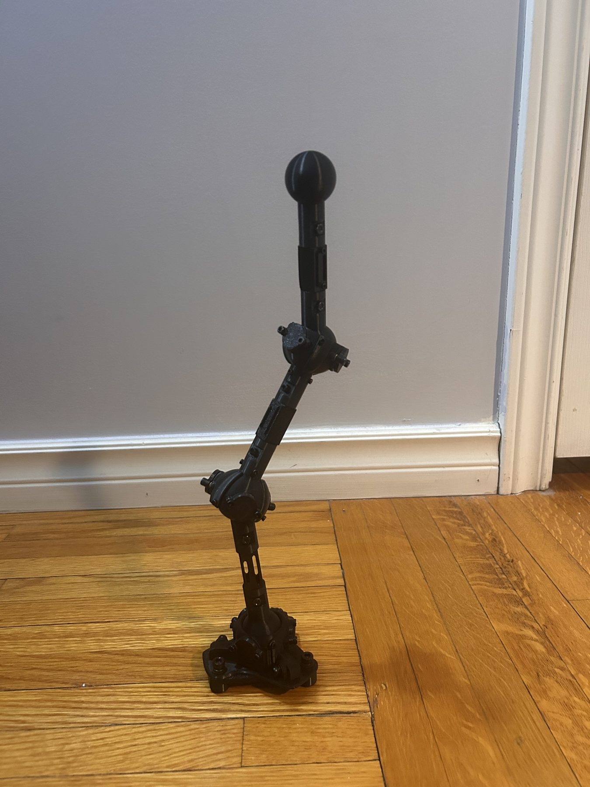
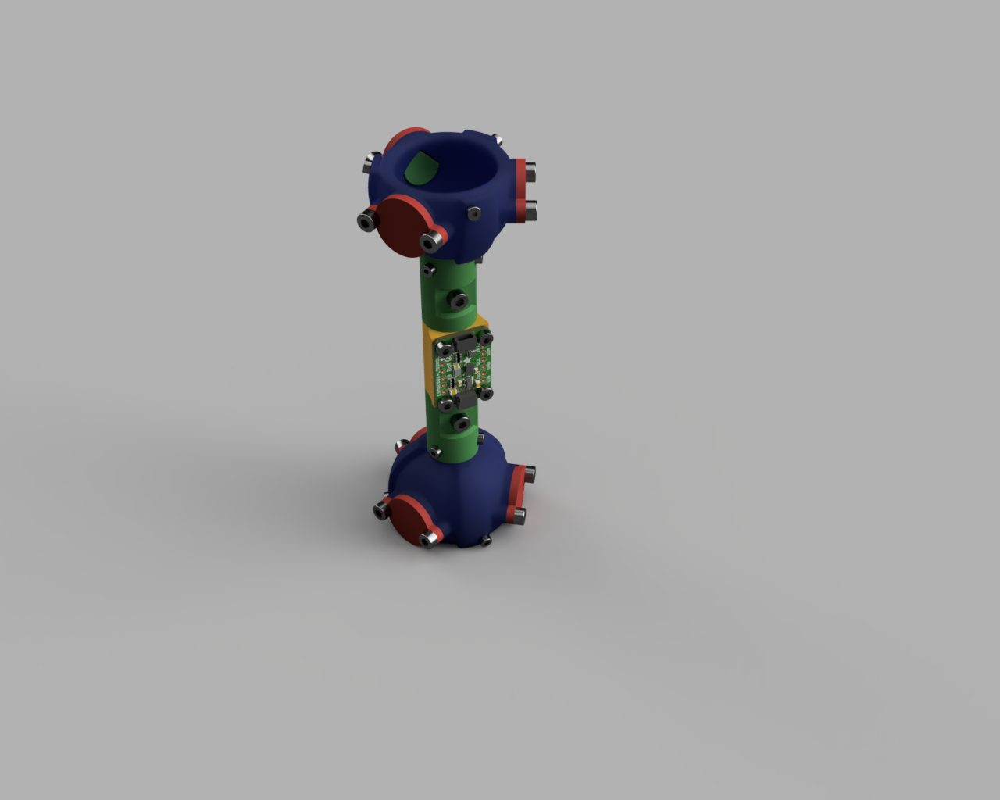
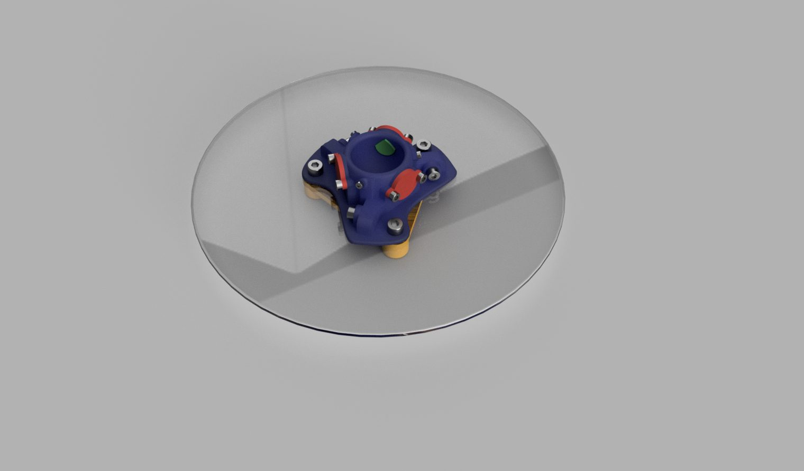
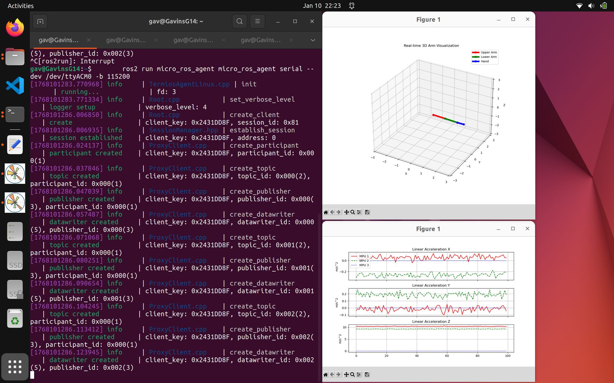
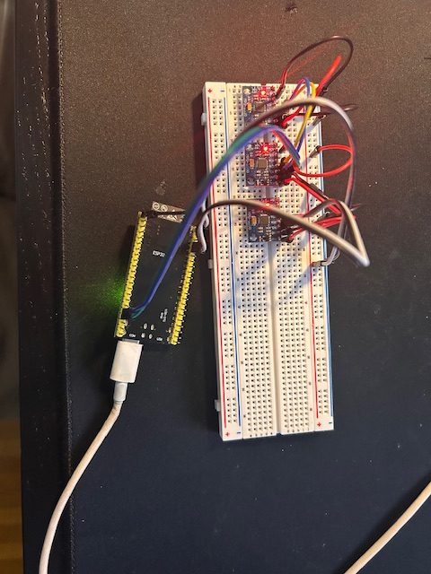

A modular, 3D-printed ball-and-socket arm designed to track the real-time location of each link and end-effector.
The largest design challenge was ensuring constant, sufficient friction between the ball and socket of each joint. Solved with a modular joint system using spring-loaded friction pads to maintain constant pressure across the joint's range of motion.
Integrated gyroscopes, accelerometers, and magnetometers using an ESP32-S3 for real-time tracking. Originally used MPU6050s and QMC magnetometers, but these proved too noisy and inaccurate; replaced with an Adafruit LSM6DSOX + LIS3MDL 9DOF IMU for stable data.
Embedded control written in C++, with a Python-based HMI and ROS 2 handling communication between the arm and the host.
As of January 2026, the physical mechanisms were 3D printed, sensors procured, and elementary wiring and control software developed.



